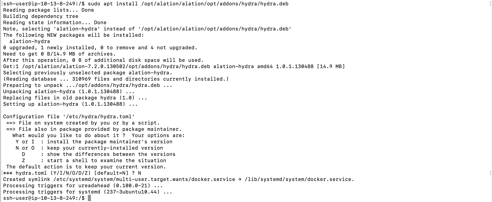
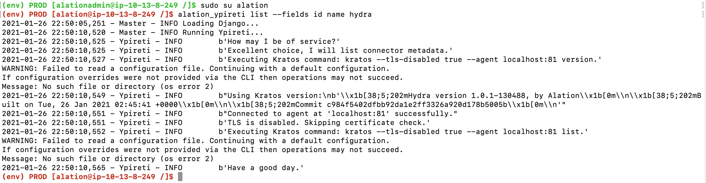

Update Alation Connector Manager¶
Customer Managed Applies to customer-managed instances of Alation
Applies from release 2021.1
After updating your Alation instance to a newer release, use these steps to update Alation Connector Manager. This instruction applies when Alation Connector Manager and OCF connectors are installed on the same host with the Alation application.
Note
Alation Connector Manager only needs to be updated when an Alation release or a patch release includes changes that affected it. This is usually called out in the update instructions for a specific release.
To update Alation Connector Manager:
On the Alation host, outside of the Alation shell, stop Alation Connector Manager (ACM).
REGULAR DOCKER
sudo service hydra stopROOTLESS DOCKER
On any operating system except Oracle Linux 7, use this command:
systemctl stop --user hydraOn Oracle Linux 7 only, use this command:
hydra stopMake sure that the corresponding container is stopped.
REGULAR DOCKER
sudo docker ps --filter name=agentROOTLESS DOCKER
docker ps --filter name=agentStop Docker.
REGULAR DOCKER
sudo systemctl stop dockerROOTLESS DOCKER
On any operating system except Oracle Linux 7, use this command:
systemctl stop --user hydraOn Oracle Linux 7, skip this step. For Oracle Linux 7, Docker in rootless mode is managed entirely by ACM itself.
Determine the new available version of Alation Container Service.
ls /opt/alation/alation/opt/addons/alation_container_serviceUpdate the Alation Container Service. In the command below, substitute the placeholder value
<version_number>with the version number you found out.sudo yum upgrade -y /opt/alation/alation/opt/addons/alation_container_service/alation-container-service-<version_number>-1.x86_64.rpmCopy and paste the script below into the console and run it. The script will update the
alation-hydrapackage on the host. Respond to the prompt in the console to confirm the update.if sudo yum list install hydra &> /dev/null; then sudo yum install /opt/alation/alation/opt/addons/hydra/hydra.rpm else sudo yum update /opt/alation/alation/opt/addons/hydra/hydra.rpm fiStart Docker.
REGULAR DOCKER
sudo systemctl start dockerROOTLESS DOCKER
On any operating system except Oracle Linux 7, use these command:
systemctl start --user dockerOn Oracle Linux 7 only, skip this step.
Start ACM.
REGULAR DOCKER
sudo service hydra startROOTLESS DOCKER
On any operating system except Oracle Linux 7, use this command:
systemctl start --user dockerOn Oracle Linux 7 only, use this command:
hydra startConfirm that the
agentand connector containers are running by listing the containers.
REGULAR DOCKER
sudo docker psROOTLESS DOCKER
docker psEnter the Alation shell.
sudo /etc/init.d/alation shellChange the user to
alation.sudo su alationVerify that the Django OCF Connector service
ypiretican reach ACM.alation_ypireti list --fields id name hydraThe output will confirm connection to ACM at the configured port and print the current OCF connector metadata if any OCF connectors are installed.
Exit from the user and the Alation shell by using
exittwo times.
To update Alation Connector Manager:
On the Alation host, outside of the Alation shell, stop Alation Connector Manager (ACM):
REGULAR DOCKER
sudo service hydra stop
ROOTLESS DOCKER
systemctl stop --user hydra
Make sure that the corresponding container is stopped.
REGULAR DOCKER
sudo docker ps --filter name=agent
ROOTLESS DOCKER
docker ps --filter name=agent
Stop Docker.
REGULAR DOCKER
sudo systemctl stop docker
ROOTLESS DOCKER
systemctl stop --user docker
Determine the new available version of Alation Container Service.
ls /opt/alation/alation/opt/addons/alation_container_serviceUpdate the Alation Container Service. In the command below, substitute the placeholder value
<version_number>with the version number you found out.sudo apt update sudo apt install -y /opt/alation/alation/opt/addons/alation_container_service/alation-container-service_<version_number>_amd64.deb
Update ACM. Run the command given below to begin the update.
Note
In 2021.1 the
hydrapackage was renamed from toalation-hydrato avoid conflicts with third-party software. Theaptpackage manager automatically resolves the name and selects the correct package to update.Version 2022.2 and newer: substitute
x.x.x-xxxin the package name with the actual version you find in /opt/alation/alation/opt/addons/hydra/.sudo apt install /opt/alation/alation/opt/addons/hydra/hydra-x.x.x-xxx.deb
Versions before 2022.2
sudo apt install /opt/alation/alation/opt/addons/hydra/hydra.deb
You will be prompted on whether or not you want to overwrite your current configuration and freshly install the new package. The answer is
N(No). This is also the default. Keep your current configuration and update the existing package. The prompt will be similar to the following example:Start Docker.
REGULAR DOCKER
sudo systemctl start docker
ROOTLESS DOCKER
systemctl start --user docker
Start Alation Connector Manager.
REGULAR DOCKER
sudo service hydra start
ROOTLESS DOCKER
systemctl start --user hydra
Confirm that the
agentand connector containers are running by listing the containers with the command below.REGULAR DOCKER
sudo docker ps
ROOTLESS DOCKER
docker ps
Enter the Alation shell.
sudo /etc/init.d/alation shell
Change user to
alation.sudo su alation
Verify that the Django OCF Connector service
ypiretican reach ACM:alation_ypireti list --fields id name hydra
The command output will confirm connection to ACM at the configured port and print the current OCF connector metadata if any OCF connectors are installed:
Exit from the user and the Alation shell by using
exittwo times.
Check Version of Alation Connector Manager¶
To find out the version of Alation Connector Manager that is installed on the Alation host:
Use SSH to connect to the Alation host.
On the host, outside of the Alation shell, check the version with this command:
sudo hydra version
The output will look similar to the following:
[ssh-user@ip-172-31-27-47]$ sudo hydra version Hydra version 1.2.0-766, by Alation Built on Fri, 22 Apr 2022 17:56:24 +0000 Key Generation and Encryption Provided by OpenSSL 1.1.1n Git Commit 21b02e4 Hydra Agent 603c031b177d Hydra Remote Proxy f70f79b10b4c
Check Alation Connector Manager Package Version¶
From version 2022.2, you can find the version number in the name of the Alation Connector Manager package in /opt/alation/alation/opt/addons/hydra (ouside of the Alation shell), for example: /opt/alation/alation/opt/addons/hydra/hydra-1.2.0-766.rpm.
Note
This directory also contains symlinks
hydra.debandhydra.rpm, which is expected.
In versions before 2022.2, the package version is not present in the package name.